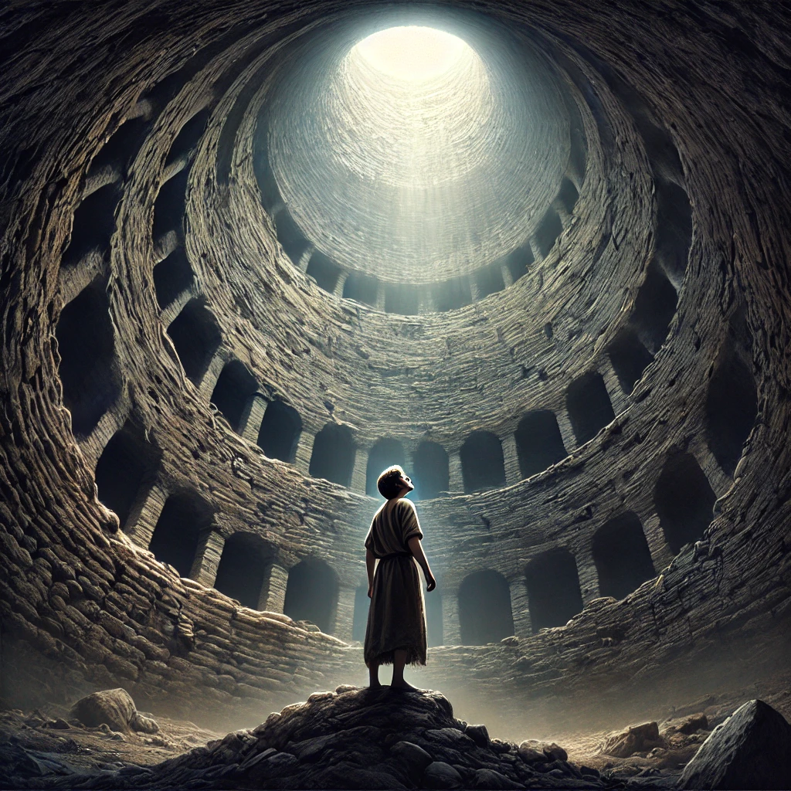

Confiando en Dios desde la Profundidad del Pozo

Génesis 37:24 pinta un vívido cuadro de desesperación: “Y lo tomaron y lo echaron en la cisterna; la cisterna estaba vacía, no había agua en ella”. Este versículo captura un momento crudo en la vida de José—traicionado por sus propios hermanos y abandonado en lo que parecía ser una situación sin salida. Sin embargo, este pozo no fue el final de la historia de José; fue el comienzo del plan divino de Dios para su vida. La lección aquí es profunda: confiar en Dios no es solo para los días soleados cuando la vida es tranquila, sino especialmente para los momentos oscuros, secos y vacíos cuando nada parece tener sentido.
David captura esta confianza de manera única en Salmo 18:1–2, cuando declara: “Te amo, Señor, fortaleza mía. El Señor es mi roca, mi baluarte y mi libertador; mi Dios, mi roca en quien me refugio; mi escudo y el poder de mi salvación, mi altura [inaccesible]”. Estas palabras nos recuerdan la fundación inquebrantable que tenemos en Dios, incluso cuando nuestro soporte parece tambalearse. Exploremos cómo confiar en Dios “desde dentro y en el fondo del pozo” a través de las verdades paradójicas de Su Reino invertido.
La Perspectiva del Mundo vs. la del Reino
Desde la perspectiva del mundo, el pozo puede representar fracaso, abandono y desesperanza. Es el lugar donde los sueños mueren, donde la fuerza humana es insuficiente y donde todos los recursos parecen agotarse. El mundo nos enseña que la confianza debe ganarse y que confiar en Dios solo es válido cuando vemos señales tangibles de Su provisión. Si no hay una escalera visible para salir del pozo, el mundo dice: “Te han olvidado”.
En contraste, el Reino de Dios transforma el significado del pozo. Lo que el mundo ve como abandono, Dios lo utiliza como preparación. Lo que se siente como desesperación es una invitación a una confianza más profunda. En el Reino, el pozo no es el final, sino el terreno donde se cultiva la fe. Considera a José: aunque sus hermanos intentaron hacerle daño, Dios estaba trabajando, orquestando eventos para Su gloria y para el eventual bienestar de José. El pozo no fue la conclusión de la historia de José, sino la base de un testimonio que revelaría la soberanía y fidelidad de Dios.
Esta perspectiva del Reino nos enseña que Dios no está ausente en el pozo. Está presente, trabajando activamente incluso cuando las paredes del pozo parecen cerrarse. Confiar en Dios en el Reino significa creer en Su bondad y propósitos, incluso cuando el mundo solo ve desesperación.
La Paradoja Explicada
Confiar en Dios desde el fondo del pozo implica vivir una paradoja: deleitarse en el Señor cuando todo lo que pruebas son lágrimas, y encontrar esperanza en Él cuando las circunstancias parecen desalentadoras. ¿Cómo reconciliamos estas verdades?
La Soberanía de Dios es Nuestra Seguridad
La primera paradoja es que el pozo nunca está fuera del control de Dios. La caída de José al pozo no fue aleatoria; fue parte de un plan divino para posicionarlo en Egipto, donde eventualmente salvaría innumerables vidas durante una hambruna. Cuando confiamos en la soberanía de Dios, vemos que incluso nuestros momentos más oscuros están bajo Su gobierno. Esto no significa que no enfrentaremos dolor, pero significa que nuestro dolor tiene un propósito. Como declaró David: “El Señor es mi roca, mi baluarte y mi libertador”. Incluso en el pozo, Dios es inmutable.
La Debilidad Revela la Fortaleza de Dios
El pozo elimina la autosuficiencia. José, amado por su padre, aprendió en el pozo que su posición terrenal no podía salvarlo. De manera similar, nuestras pruebas a menudo eliminan las muletas del confort humano, obligándonos a apoyarnos únicamente en Dios. Es aquí donde Su poder brilla más: “Te basta mi gracia, pues mi poder se perfecciona en la debilidad” (2 Corintios 12:9).
Dios Redime el Pozo
Lo que parece ser un lugar de desesperación se convierte, en manos de Dios, en un lugar de transformación. El viaje de José del pozo al palacio ilustra esta verdad: Dios redime lo que el enemigo intenta usar para mal. El ejemplo supremo de esto es la cruz. Lo que parecía derrota—un Salvador crucificado—se convirtió en la victoria final sobre el pecado y la muerte. De manera similar, nuestros pozos pueden convertirse en plataformas para la gloria de Dios.
Viviendo y Actuando de Acuerdo a la Paradoja
Para confiar en Dios en el pozo, debemos abrazar la paradoja adoptando una mentalidad del Reino y viviendo nuestra fe.
Reconoce el Dolor Sin Perder la Esperanza
La confianza no niega la realidad. El pozo es real, y el dolor es válido. Derrama tu corazón delante de Dios, como lo hizo David en los Salmos, y confiesa tu necesidad de Su ayuda. Pero junto a tu lamento, aférrate a la esperanza. Dios escucha tu clamor y está cerca de los quebrantados de corazón (Salmo 34:18).
Enfócate en el Carácter de Dios, No en las Circunstancias
Es tentador enfocarse en las paredes del pozo: nuestras limitaciones, temores y dudas. En cambio, fija tus ojos en la naturaleza inmutable de Dios. Él es fiel, bueno y soberano. Medita en Sus promesas en las Escrituras, como la declaración de David en Salmo 18:2. La confianza crece cuando recordamos quién es Dios, incluso cuando no podemos ver lo que Él está haciendo.
Actúa en Fe, No en Miedo
José no sabía cómo se desarrollaría su historia, pero permaneció fiel a Dios en cada etapa, ya sea en el pozo, en la casa de Potifar o en la corte de Faraón. Confiar en Dios en medio de el pozo significa seguir viviendo Su llamado, incluso cuando las circunstancias parecen sombrías. Ora, adora y obedece Su Palabra, no porque lo sientas, sino porque Él es digno.
Conclusión
Confiar en Dios en el Pozo Conduce a la Gloria
El pozo no es el final; es un lugar donde se revela la fidelidad de Dios. Confiar en Él en el fondo del pozo significa creer que Él es soberano sobre nuestras pruebas, que es fuerte en nuestra debilidad y que redime todas las cosas para Su gloria y nuestro bien. Como nos recuerda David, Dios es nuestra fortaleza, escudo y baluarte (Salmo 18:2). Confía en Él, incluso cuando el pozo se siente oscuro y seco. Así como levantó a José del pozo al palacio, Él es fiel para obrar todas las cosas para el bien de los que lo aman (Romanos 8:28).